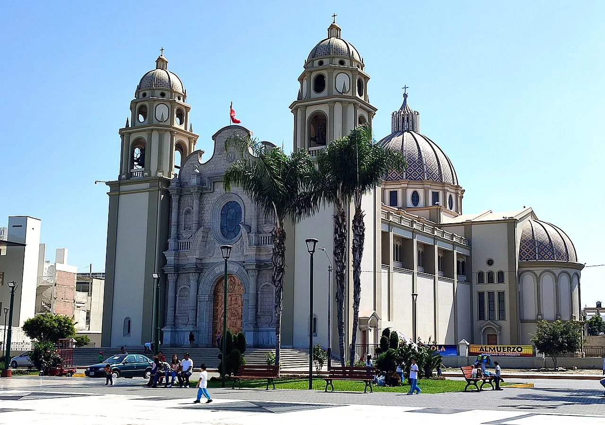

Donde empezó todo
Nací el 4 de junio de 2004 en el Hospital Regional Eleazar Guzmán Barrón, en Nuevo Chimbote. Mis papás son Carlos Flores y Corali Vásquez. Soy el del medio: Jean es mi hermano mayor e Imanol, el menor.

Lo que me llevo de casa
Me gusta volver a fotos como la de este cumpleaños. Ahí estamos los cinco, reunidos alrededor de una torta. Es un momento sencillo que me alegra haber guardado.
Ahora que estoy por terminar la universidad, quiero que mi familia se sienta orgullosa de lo que haga con todo lo que he aprendido. Cuando pienso en la familia que me gustaría formar algún día, también pienso en algo sencillo: quiero ser un buen esposo y un padre que esté presente.